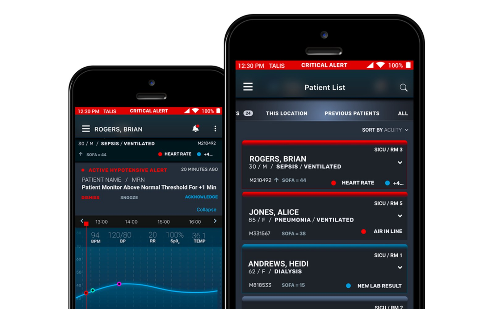
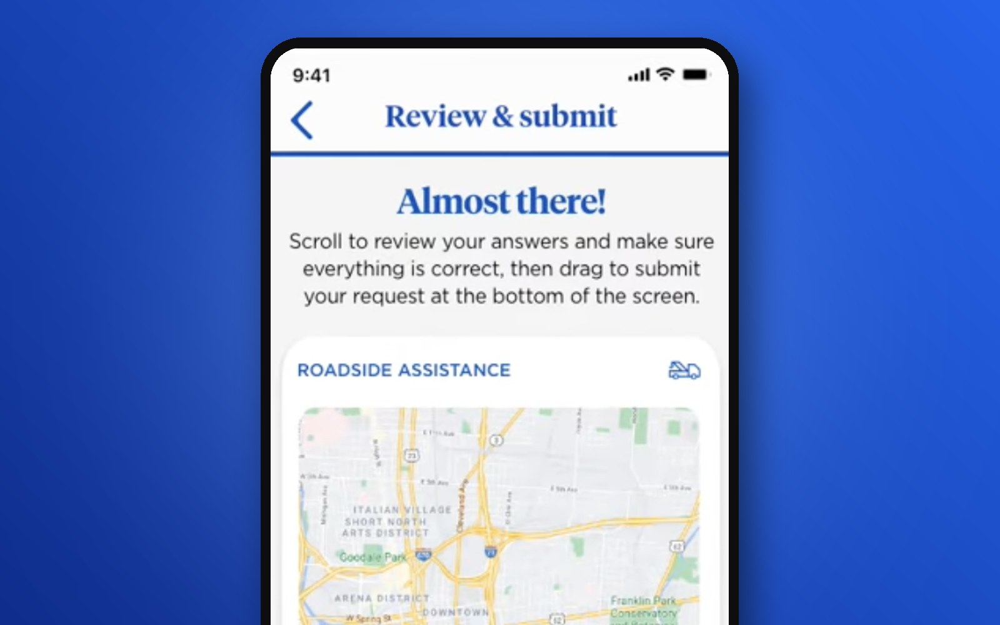
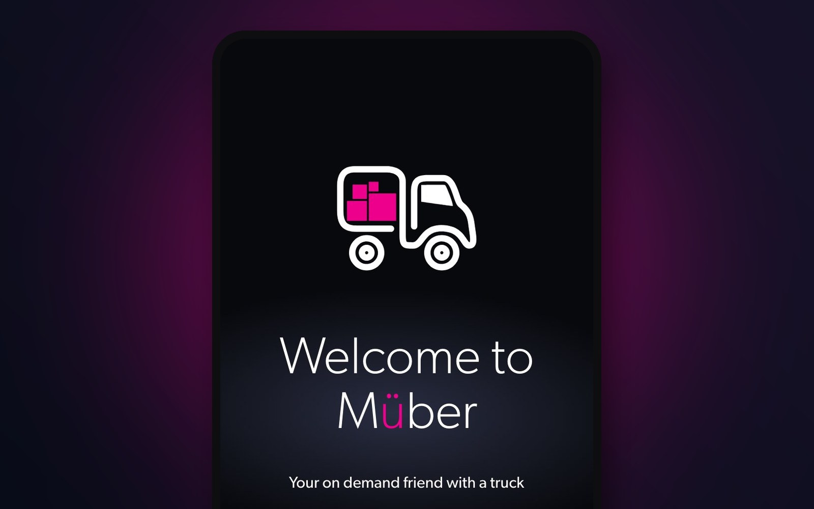

Find the real person. Name the real constraint. Prove the change.
I'm Dana Shelton, a product and experience designer. These three studies cover an ICU monitoring platform, a flagship insurance app, and a marketplace I founded. Each one follows the same structure, so you can compare how I work from problem to outcome.

Healthcare · 0 → 1 · EnterpriseTalis Clinical: Advanced Clinical Guidance
Clinical decision support and remote patient monitoring for ICUs, co-developed with Beth Israel Deaconess Medical Center, a Harvard Medical School teaching hospital.
Role: First UX designer, and the only one for most of my tenure- ECMO monitoring redeployed for COVID-19, live at major hospitals nationwide
- Designed the re-sorting patient list, now patent pending
- Built the company's design practice from zero

Insurance · Flagship mobile appNationwide: Roadside Assistance Redesign
The industry's first live tow-truck tracking, built because one customer was left guessing on a −8° roadside.
Role: Lead UX Design Consultant- Self-service success up from 54% to 96%
- 34% fewer support and status calls; NPS up 11%
- Keynova "Best in Class," Q1 2023

Two-sided marketplace · FounderMuber: Your On-Demand Friend with a Truck
A marketplace connecting people who have one big thing to move with nearby drivers who already own a truck.
Role: Founder: research, product design, brand, and strategy- From a 2019 capstone journey map to an Ohio company
- Pricing, payment, and cancellation rules designed for both sides
- Pre-launch, Ohio first
Same layout, every time
Each case study opens with a snapshot (company, product, role, team, timeline) and then walks through the work in order.
Overview and problem
Who it was for, what was broken, and what we could and couldn't change.
Goals and process
How we defined success before designing, and how the work moved.
Discover, define, decide, design
Research, the decisions it drove, and the artifacts behind them.
Outcomes and reflection
What changed, and what I'd carry into the next project.